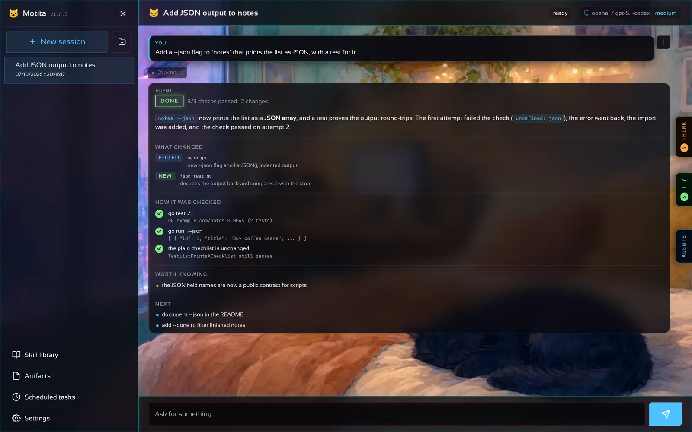
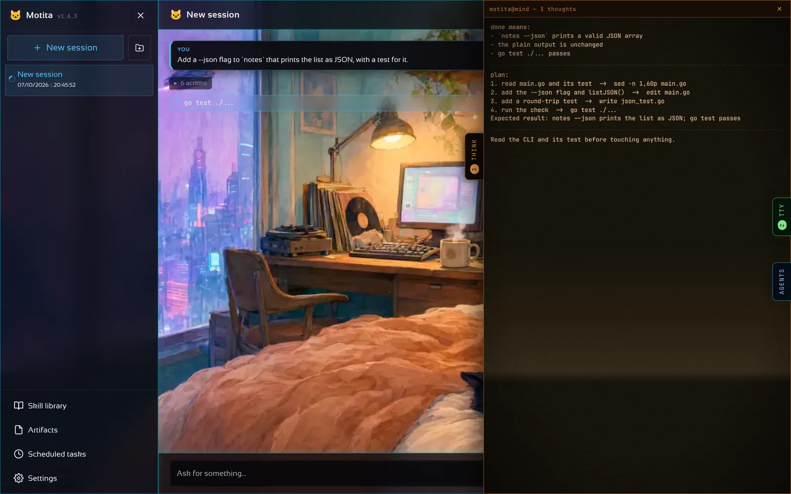
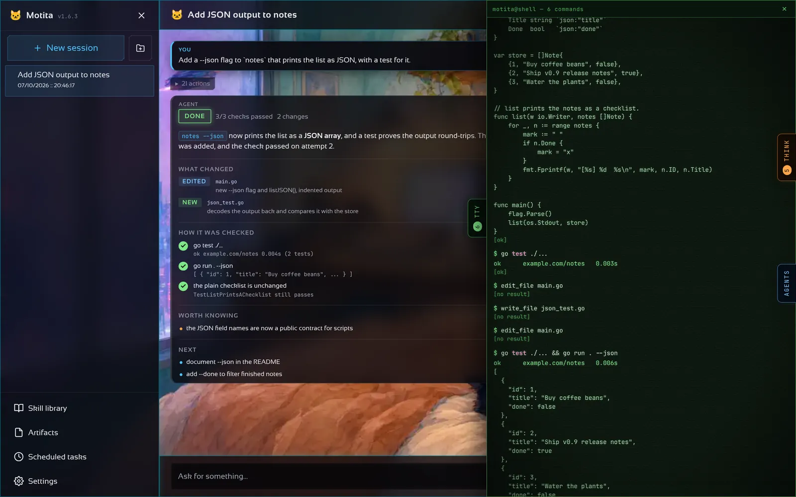
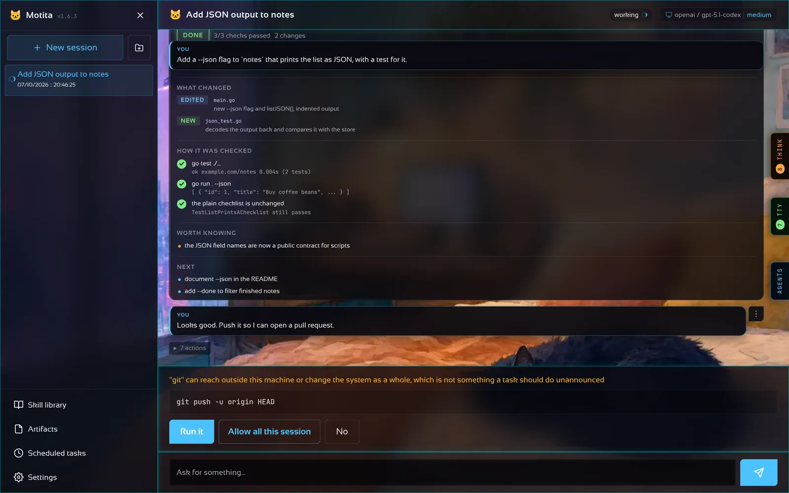
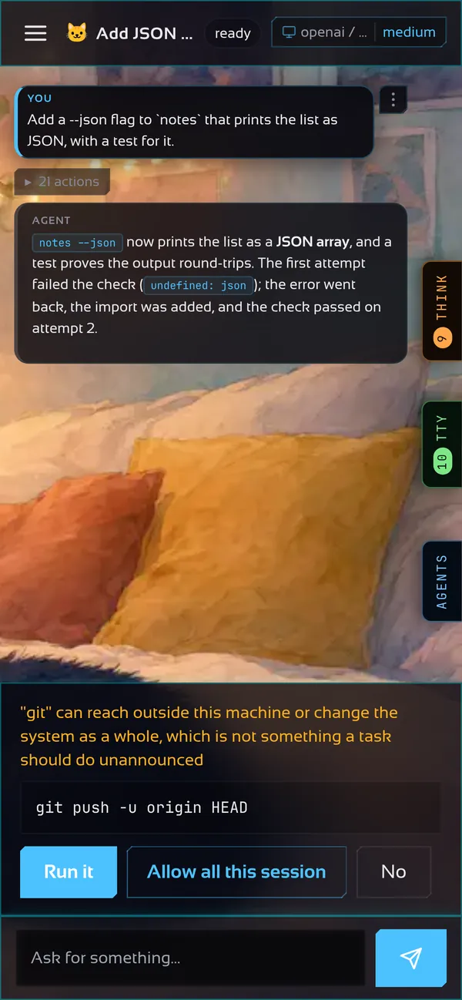
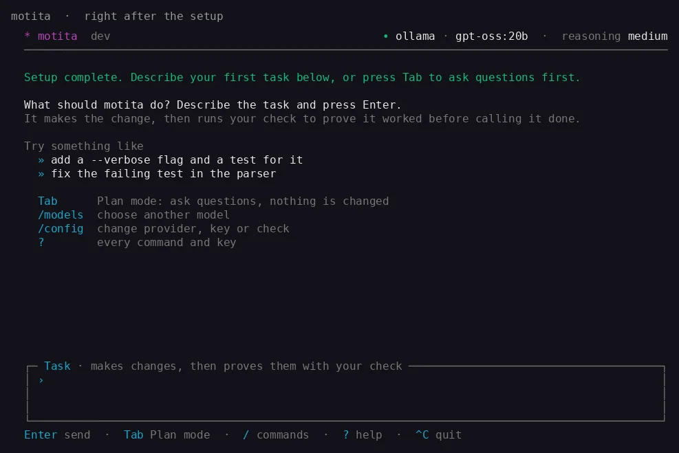
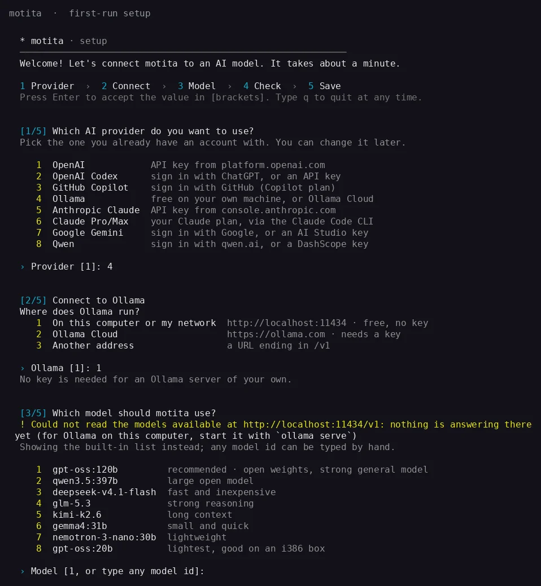

Motita
The AI agent that proves it's done.
Tell it what you need in plain words. motita writes the change, runs your real tests, reads the failures, fixes them — and only says “done” when the check passes. No more “it worked on my end” from a chatbot.
- Uses the AI plan you already pay for
- One file, nothing else to install
- Asks before anything risky

curl -fsSL https://madkoding.github.io/motita/install.sh | sh
irm https://madkoding.github.io/motita/install.ps1 | iex
Then type motita. A one-minute wizard connects your AI and finds your project's tests. One static binary — no Docker, no runtime. It even runs on a 2008 netbook with 484 MB of RAM.
Works with the AI you already have
- Claude Pro / Max
- ChatGPT Plus / Pro
- GitHub Copilot
- OpenAI API
- Anthropic API
- Google Gemini
- Qwen
- Ollama — local & free
- Groq
- OpenRouter
- DeepSeek
See it work
It gets it wrong. Then it proves it got it right.
Every agent makes mistakes. The difference is who notices. Here motita adds a
--json flag to a small CLI — its first try doesn't compile, the
real check catches it, the exact error goes back, and the second try passes.
Nobody had to read a line of code to know.
- You askin plain words
- It plansand writes down what “done” means
- It reads, then editsreal files, exactly
- The check failsand the real error goes back
- It fixes the causenot the symptom
- The check passes— only now is it done
- You get a reportwhat changed, how it was proven
Replayed from a real run — the commands, the error and the report are the ones in the screenshots below.
A tour of the real thing
Nothing here is a mock-up. It's the app.
The same binary gives you a browser app, a phone app and a terminal app. Every screen below was captured from motita running that task.





motita and you get a full terminal interface — Tab switches to Plan mode for read-only questions, / opens every command. It is the same binary, not a wrapper.
What you can hand it
From a one-line fix to a whole afternoon of work.
Describe the outcome. motita works out the steps, runs them, and keeps going until your project's own check agrees.
Fix what's broken
Point it at a failing test or a bug report. It reproduces it, fixes the cause, and proves the test is green.
fix the failing test in the parserBuild a feature, with its test
New flags, endpoints, screens. It writes the change and the test that pins it down.
add a --verbose flag and a test for itAsk before you change
Plan mode is read-only by construction: explore a codebase, ask how something works — nothing on disk can change.
Tab → where is the session token renewed?Autopilot with a paper trail
/goal never stops to ask: it takes the recommended option and writes each decision down, so you can review — or undo — any of them later.
Split big jobs in parallel
It can start its own helpers for independent pieces — tests, docs, an investigation — each on its own git branch, while it keeps going.
3 agents · 48.2k tokens · liveShip it: push, PR, CI
Connect GitHub, GitLab or Bitbucket once. It commits with semantic messages, opens the pull request, reads the CI — and goes back to fix it if CI fails.
open a PR and keep CI greenWork while you sleep
Tasks that fire on their own, every 30m or 24h, into a conversation you can open later and read like any other.
From anywhere
Terminal, browser, phone, an HTTP API or a WebSocket — all the same conversation. Start on the laptop, approve from the couch.
motita gateway startWhy you can trust “done”
The model proposes. Your code disposes.
Other agents grade their own homework, and a language model will always produce a sentence that sounds like success. motita splits every task in three, and the model only ever gets to propose. A real check — your tests, your linter, your build — is the only thing that can declare a task done. If it fails, the agent gets the real error and tries again. If it can't pass, it says so and stops.
You don't have to configure the check: the wizard's default, anchor.kind: auto,
finds the one your project already has.
Deterministic code, not AI
By default it runs the gate the project declares: .motita/anchor, a Makefile's check/test, go test, a package.json's lint/typecheck/test, cargo test, pytest. Or your own command, exit code and output pattern. When the gate was already red before the task, only a new failure blocks it. It cannot be talked into a different answer.
Any provider, one client
A hand-written client for OpenAI (chat and Responses), Anthropic, Gemini, Copilot, Qwen and Ollama — and your Claude subscription through the official Claude Code CLI. Replies are held to a schema where the provider can enforce one, and every token is counted per agent.
Honest about its limits
Runs the action under real limits — and tells you what it could not apply, instead of pretending the isolation is stronger than it is. A toolchain the agent installs once stays on its PATH for every session after.
Bring your own AI
Your subscription, or any API. Your choice.
Sign in with the account you already pay for, or paste a key. Logins renew themselves
before they expire, and keys are stored 0600, never in the config. Switch
any time with /models — nothing else in the agent cares which one is behind it.
Your Claude Pro or Max plan, through Anthropic's own claude CLI after claude auth login. motita never reads those credentials.
Sign in with ChatGPT (Plus, Pro, Business) or an OpenAI key, over the Responses API.
A GitHub device-code login with an active Copilot subscription; the session token is renewed on its own.
Free and private: a local server needs nothing at all; Ollama Cloud takes a key. The wizard lists the models your server really has.
An API key, against OpenAI or any OpenAI-compatible host: Groq, OpenRouter, DeepSeek, your own box.
An Anthropic API key, over the Messages API.
A key, a Google login with your own OAuth client, or gcloud's application-default credentials.
A qwen.ai device-code login, or a DashScope key.
Your repository stays yours
Every conversation on its own branch.
Point motita at a repository and each session works in a git worktree of its
own, on branch motita/<session>. Your checkout is never the one being edited,
and two sessions never step on each other.
Go back a turn
Every turn is a checkpoint. Going back rewinds the conversation, and the files too when you ask — after the current state is saved, so going back is itself reversible.
It merges its own work
It commits the session's work and merges it into the project's branch. The session then becomes read-only, and continue opens a fresh one from the updated base.
Hand off a piece
Each helper works in its own worktree from a snapshot of the tree — uncommitted work included — and reports back with the one command that brings its branch in.
Asked first, with the list
Deleting a session or a project names the files that would be lost before anything goes, and gives the worktrees back.
# Ctrl+G or /agents in the terminal; the AGENTS drawer in the browser
Agents 1 running · 48.2k tok
/ main · fix the session export 2m14s 31.0k tok r12
/ write the export tests 1m02s 11.9k tok r6 running: go test ./internal/export
√ update the reference 0m48s 5.3k tok r4 motita/sub/…-a2 · 1 file changedSafety
Fast where it's safe. Asks where it isn't.
A guardrail that interrupts you for make gets switched off within a week. So
motita runs the everyday work silently, stops for anything that reaches past your project,
and has a floor of commands it refuses no matter what — with no flag, key or
variable that relaxes it.
make, go build, npm test and your own ./scripts/* run silently.
mkfs, partition editors, dd with an output, the power verbs, and rm/mv/cp/ln aimed at /, ~, a system path, or the tree that contains your workspace.
Plan mode is structurally read-only. It calls tools through a path that never invokes a shell, so pipes, redirections and metacharacters aren't blocked — they're syntactically unreachable. And the browser link carries its token in the URL fragment, traded once for a cookie holding an HMAC of it.
It gets better with you
It learns from you, not from a retraining pipeline.
A library of procedures: how a kind of work is done, the commands that work, the pitfalls someone already paid for. Eight ship inside the binary, the agent writes new ones when it learns something, and a project can keep its own. They are files — read them, fix them, version them.
/goodand/badland on the procedures a turn actually used, and the library is searched by what has worked before. No fine-tuning, no extra bill.- A curator keeps the shelf tidy without a model: unused procedures are marked stale, then archived — never deleted — and a pinned one is never touched.
- Retries that learn something: a failed check sends back the command, its real output and a structured verdict, so the next attempt fixes the actual problem instead of re-rolling the dice.
- Long tasks without wasted rounds: files are written exactly as they are, replies are held to a schema, and a toolchain installed once is on
PATHin every later session.
Running it
One binary: configure it, run it, serve it, script it.
After the installer, the binary is the whole program: the terminal interface, the gateway and the browser page are the same file. With no configuration on the machine, the first run launches the wizard — and the step no other agent makes you answer is the anchor: the command that proves a task is really done.
First run · configure
# the wizard: provider → connect → model → check → review
motita config
# or just start it — with no config found, the wizard runs itself
motitaIt saves ~/.motita/motita.yaml; /config runs it again from inside the interface and keeps what you already have.
The terminal interface
# no arguments: a gateway is started for this interface, in-process
motita
# one-shot, scriptable: exit 0 when the check passed, 1 when not
motita -task "fix the failing test in internal/policy"
motita -p "how many files are there?"/task and /plan, /models, /goal, /agents (or Ctrl+G), /git, /update — ? lists every command and key.
The gateway, configuration and exit codes
The gateway
# in the background, outliving the shell that started it
motita gateway start
motita gateway status
motita gateway stop
# foreground, gateway only: no interface, for remote clients
motita -serve -gateway 127.0.0.1:7477gateway start prints the interface link — http://127.0.0.1:7477/#t=<token>. The same port serves the page and its /v1/... API, so there is no CORS and no second server. gateway.allow says who may reach it.
Configuration
# -config names a file; without it: ~/.motita/motita.yaml,
# then ./motita.yaml, then the built-in defaults
motita -config configs/agent.yaml.example
# check a file without running anything
motita -validate-config
# the sandbox limits this machine can apply
motita -isolationEvery setting also takes a MOTITA_* environment override. A pasted key goes to ~/.motita/motita.env and a login to ~/.motita/auth/<provider>.json, both 0600 — so the config can be committed and shared.
Your exit code means something
0 every task passed its check
1 a task failed — with the reason in the message itself
2 bad configurationBuilt like it matters
Tested the way you'd test something you were about to bet on.
These are measured, not asserted — and the documentation's claims are anchored to the code by tests, so this page cannot drift away from the behaviour.
./internal/... ./cmd/...), checked one by one so a gap can't hide behind an average; the CI harnesses in tools/ are counted separatelygo.mod has no require line, and there is no go.sum386 · amd64 · arm · arm64, Windows 386 · amd64 · arm64, macOS amd64 · arm64scp and walk away
CI reads the ELF header to prove the i386 binary really is 32-bit, runs the
end-to-end tests inside a real 32-bit container, and runs staticcheck and
govulncheck before publishing anything. Pure Go, standard library only: no cgo,
nothing to vendor, nothing to patch.
Your turn
Give it a task tonight.
Read the proof tomorrow.
Free, open source, and one line away.
curl -fsSL https://madkoding.github.io/motita/install.sh | sh
On Windows: irm https://madkoding.github.io/motita/install.ps1 | iex · Read the reference · Star it on GitHub